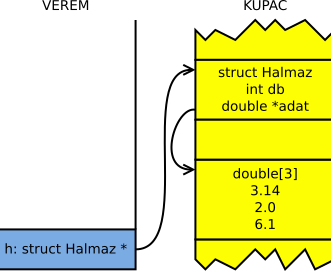

Miért hibás?
Miért nem írhatunk ilyet C-ben? Mondj legalább két okot, ami miatt ez lehetetlen!
struct Hibas {
int db;
double szamok[db]; // HIBÁS
};Megoldás
- Egy struktúra mérete fordítási idejű konstans kell legyen. Ezért nem lehet a struktúrában olyan tömb, amelynek méretét változóval adjuk meg.
- Ha megadhatnánk változóval, még akkor is memóriaszemét lenne a
db, amikor egystruct Hibastípusú változót hozunk létre – tehát akkor mekkora lenne a tömb?
Sokszög
Írjunk programot, amelyik bekéri, egy eltárolandó sokszögnek hány csúcsa van; utána pedig tárolja el a begépelt csúcsok koordinátáit!
Megoldás
#include <stdio.h>
#include <stdlib.h>
typedef struct Pont {
double x, y;
} Pont;
int main(void) {
int n;
printf("n="); scanf("%d", &n);
Pont *poligon = (Pont*) malloc(n*sizeof(Pont));
if (poligon == NULL) {
printf("Memoriafoglalasi hiba.\n");
return 1;
}
for (int i = 0; i < n; ++i) {
printf("%d. x=", i+1); scanf("%lf", &poligon[i].x);
printf("%d. y=", i+1); scanf("%lf", &poligon[i].y);
}
/* itt csinálhatnánk valami hasznosat a tömbbel. például
ha a sokszög konvex, akkor a súlypontját (belső pont) véve
háromszögekre bonthatjuk azt, és kiszámolhatjuk a területét. */
free(poligon);
return 0;
}Egy Pont struktúra méretét a sizeof(Pont) kifejezés adja meg. Ezt a
fordító kiszámolja, nem nekünk kell vele foglalkozni. Mivel a tömb elemei pedig közvetlenül
egymás után vannak, ezt a mérettel szorozva kapjuk a tömb méretét bájtokban.
Sztringek összefűzése
Írj függvényt, amely paraméterként vesz át két sztringet, amelyeket nem módosít. A
visszatérési értéke legyen egy új sztring, amelyet dinamikusan foglalt le, és a két sztringet
tartalmazza összefűzve! A függvény pontosan annyi bájt memóriát foglaljon le dinamikusan,
amennyire szükség van! A string.h függvényeit használd minden részfeladathoz!
Írj egyszerű főprogramot, amely meghívja a függvényt, és kiír egy összefűzött sztringet a képernyőre. Figyelj arra, hogy ne legyen memóriaszivárgás – azaz a lefoglalt memóriát szabadítsd is fel.
Megoldás
#include <stdio.h>
#include <stdlib.h>
char* osszefuz(char const* s1,char const *s2) {
/* Megmérjük mindkét sztring hosszát */
int len = strlen(s1) + strlen(s2);
/* Területfoglalás (+1 hely a lezáró 0 miatt) */
char *uj = (char*) malloc((len+1) * sizeof(char));
/* Ha nem sikerül :( */
if (uj == NULL) return NULL;
/* Különben másolunk */
strcpy(uj, s1);
strcat(uj, s2);
return uj;
}
int main(void) {
char *egyben;
egyben = osszefuz("Hello ", "world!");
if (egyben != NULL)
printf("%s", egyben);
free(egyben); /* Fontos hogy felszabadítsuk amit lefoglaltunk!!! */
return 0;
}Dinamikusan foglalt sztring
Készíts függvényt, amely megkap egy stringre mutató pointert és visszatér egy újonnan foglalt string címével, amely a paraméter string kisbetűs elemeit tartalmazza az eredeti sorrendben. Az új string számára pontosan annyi helyet foglaljon, amennyire szükség van!
Dinamikus sztring nyújtása
A string.h fájl strcat() függvénye sztringek összefűzésére való: az strcat(x, y) hívás
az x pointer által mutatott sztring végéhez fűzi az y sztringet. Ehhez az x által
mutatott tömbben elegendő helynek kell lennie, különben a függvény túlindexel. A helyet a hívónak kell biztosítania, ami
azért is kényelmetlen, mert neki is bajlódnia kell a sztringek hosszával, karaktertömbök méretével.
A mostani feladatod egy okosabb összefűzést írni. A függvényedet x = hozzafuz(x, y) formában kell majd
használni. A dolga az, hogy egy meglévő, dinamikusan foglalt x sztringet nyújtsa meg akkorára, hogy
az y is hozzáfűzhető legyen, és tegye is meg a hozzáfűzést. Például:
char *x;
x = (char*) malloc((4+1) * sizeof(char));
strcpy(x, "alma");
x = hozzafuz(x, "fa");
printf("%s\n", x); // almafa
free(x);Tetszőlegesen hosszú sor beolvasása
Az fgets(str, 50, stdin) függvény a szabványos bemenetről (stdin) olvas be egy sort
a 50 elemű, str nevű karaktertömbbe. Eközben figyelembe veszi a karaktertömb méretét,
tehát azt, hogy abba 50-1 = 49 karakterből álló sztring kerülhet csak. Persze előfordulhat, hogy
a beolvasni kívánt sor ennél is hosszabb. Az fgets() ezt is tudja jelezni, méghozzá oly módon,
hogy a beolvasott sztring végére \n karaktert tesz, ha teljes sort olvasott. Tehát:
- Ha van
\na sztring végén, akkor végére értünk a sornak. - Ha nincs, akkor viszont nem fért a tömbbe, és egy újabb
fgets()hívás fogja megadni a folytatást.
Írj programot, amely tetszőlegesen hosszú sort tud beolvasni egy dinamikusan foglalt sztringbe! Végezd el
a sor beolvasását az fgets() segítségével egy ideiglenes tömbbe, 50 karakterenként; nyújtsd
a dinamikus sztringet folyamatosan, amíg meg nem érkezik a \n!
Tipp
Használd fel ehhez az előző feladat megoldását!
Teszteléshez válaszd kicsire az ideiglenes tömböt (pl. 10 karakteresre), akkor fogod látni, hogy az egymás utáni összefűzések jól működtek-e. Valójában azt a tömböt egyébként nagyra érdemes választani, mert úgy hatékonyabb a program: kisebb az összefűzések, másolások száma.
Minden ötödik után
Írj C függvényt, amely egy nullával terminált sztringben, amely egyes karaktereket ('1') és nullákat ('0') tartalmaz, minden egymást követő ötödik egyes után beír egy nullát! Az eredmény számára a függvény foglaljon helyet.
Pl: 11110111011111110011 → 111101110111110110011
Dinamikus squeeze
Írj függvényt, amelyik két sztringet vár paraméterként. Az első sztring egy feldolgozandó
szöveget tartalmaz, a második pedig mindenféle karaktereket. A függvény feladata, hogy
visszatérjen egy olyan dinamikusan foglalt sztringgel, amely úgy keletkezik, hogy az elsőből
kihagy minden olyan karaktert, amelyik a másodikban szerepel. Pl. ha a bemenet "almale"
és "aeoiu", a kimenet "lml" (elhagyta a magánhangzókat).
Pontosan annyi memóriát foglalj, amennyire szükség van! Írj programrészt, amelyben bemutatod a
függvény használatát. A string.h függvényei használhatóak.
Tipp
Forgasd ki az strchr-t: mintha a karakterek tömb egy halmaz lenne,
megpróbálsz megkeresni egy karaktert. Ha meglesz, nem NULL pointerrel tér vissza.
Persze nem muszáj így csinálni, egy „van-e benne” ciklus megteszi.
Megoldás
#include <string.h>
#include <stdio.h>
#include <stdlib.h>
char *szur(char *be, char *karakterek) {
int ujhossz = 0;
/* vegigmegyunk az eredetin */
for (int i = 0; be[i] != 0; i++)
/* ha NEM talalhato...
* azt strchr NULL-t ad, ha nincs benne az a karakter. */
if (strchr(karakterek, be[i]) == NULL)
ujhossz++;
char *uj = (char *) malloc(ujhossz + 1);
int cel = 0;
for (int i = 0; be[i] != 0; i++)
/* ha NEM talalhato...
* azt strchr NULL-t ad, ha nincs benne az a karakter. */
if (strchr(karakterek, be[i]) == NULL)
uj[cel++] = be[i];
/* 0 a sztring vegere */
uj[cel] = 0;
return uj;
}
int main(void) {
char *szurt = szur("kortefa", "aeiou");
printf("[%s]\n", szurt);
free(szurt);
return 0;
}Dinamikus trim()
Írj függvényt, amelyik egy paraméterként kapott sztring
elejéről és végéről eltávolítja a szóköz karaktereket
(a többi maradjon)! A bemeneti, paraméterben kapott sztringet
ne változtassa meg; a visszatérési értéke legyen egy dinamikusan
foglalt tömb, amelyik az új sztringet tartalmazza.
Egy bájttal se foglalj több dinamikus memóriát, mint amennyi
szükséges! Pl. ha a bemenet " helló, mizu? ",
akkor a kimenet "helló, mizu?" legyen. Írj
programrészt, amelyben bemutatod a függvény használatát.
A string.h függvényei használhatóak.
Megoldás
Ennek az szokott lenni a neve, hogy strstrip vagy trim.
#include <stdio.h>
#include <stdlib.h>
char *strtrim(const char *forras) {
/* az elejen atugorjuk a spaceket, az elso nem
* space karakterig. ami amugy 0 is lehet. */
int eleje = 0;
while (forras[eleje] == ' ')
eleje++;
/* ezzel pedig eloszor tenyleg elmegyunk a vegeig */
int vege = 0;
while (forras[vege] != 0)
vege++;
vege--; /* ez az utolso karakter indexe */
/* aztan visszajovunk a spaceknel is. */
while (vege > 0 && forras[vege] == ' ')
vege--;
/* a kovetkezo vege++-szal a veget beallitom az utolso
* utani karakterre. ezt igy szokas csinalni: eleje
* az elso karakterre mutat, vege az utolso UTANIRA.
* a tomboknel ugyanez van: 100 elemu tomb, 0 az eleje,
* 99 a vege, vagyis a 100-as indexu az utolso utani.
* " hello, mizu? "
* ^eleje ^vege
*/
vege++;
/* vege<eleje akkor tortenhet, ha a sztring csak spaceket
* tartalmazott. mert akkor az eleje indexszel a vegen
* allunk (strlen(forras)-1), es a vege indexszel az elejen (0). */
if (vege < eleje)
vege = eleje;
/* ennyi karakter kell; +1, a lezaro 0 miatt */
/* itt pl jol jon, hogy vege az utolso utani karakter, mert
* vege-eleje a masolando sztring hosszat adja, nem eggyel
* kevesebbet. */
char *uj = (char *) malloc(vege - eleje + 1);
/* masolom a karaktereket. egyutt futo ciklusvaltozok!
* itt is jo, hogy a vege az utolso utanira mutat, mert a
* szokasos < osszehasonlitast hasznalom. */
int c = 0;
for (int f = eleje; f < vege; f++)
uj[c++] = forras[f];
uj[c] = '\0';
return uj;
}
int main(void) {
char *uj = strtrim(" hello, mizu? ");
printf("[%s]\n", uj);
free(uj);
return 0;
}Dinamikus strjoinv()
Írj egy függvényt, amelyik paraméterként kapott sztringeket fűz össze, közéjük a megadott
karaktert téve elválasztónak! A függvény első paramétere a bemenő sztringek tömbje, amelynek
legutolsó tagja egy null pointer (az jelzi a végét), a második paraméter pedig az elválasztó
karakter. Visszatérési értéke legyen egy dinamikusan foglalt sztring, amelyik éppen akkora, hogy
belefér az eredmény. Pl. bemenetek: { "alma", "korte", "narancs", NULL } és
';', kimenet: "alma;korte;narancs". Írj programrészt, amelyben bemutatod a
függvény használatát. A string.h függvényei használhatóak.
Megoldás
Ez is klasszikus feladat, strjoinv vagy implode néven.
Lent a kódban az egykarakteres elv[] sztring
pedig gyakorlatilag sprintf("elv", "%c", elvalaszto).
Azért csináltam, hogy az elválasztót is lehessen strcat()-olni.
Gyakorlatilag a karakterből ';' sztring lesz ";".
#include <string.h>
#include <stdio.h>
#include <stdlib.h>
char *osszerak(char **sztringek, char elvalaszto) {
int hossz = 0;
for (int i = 0; sztringek[i] != NULL; ++i)
/* az i. sztring hossza, es utana az elvalaszto char */
hossz += strlen(sztringek[i]) + 1;
/* +1 a lezaro 0, -1 hogy nincs utolso elvalaszto... szoval most pont jo */
char *uj = (char *) malloc(hossz * sizeof(char));
/* ez egy egykarakteres sztring */
char elv[2];
elv[0] = elvalaszto;
elv[1] = '\0';
/* az elsőt külön, aztán a többi elé elválasztó is kell */
strcpy(uj, sztringek[0]);
for (int i = 1; sztringek[i] != NULL; ++i) {
strcat(uj, elv);
strcat(uj, sztringek[i]);
}
return uj;
}
int main(void) {
char *sztringek[] = {"alma", "korte", "narancs", NULL};
char *uj = osszerak(sztringek, ';');
printf("[%s]\n", uj);
free(uj);
return 0;
}Dinamikus sztring
Definiálj egy olyan DinSztring struktúrát, amely egy tetszőlegesen hosszú sztring karaktereit tárolja dinamikus tömbben, és annak hosszát is megjegyzi (a tömb nincsen nullával lezárva)!
Írj függvényt, amely átvesz paraméterként egy ilyen sztringet, és úgy módosítja a tartalmát, hogy abból eltűnnek a szóközök! Pl. „egy ilyen sztring”-ből „egyilyensztring” lesz. A foglalt tömbnek mindig pont akkorának kell lennie, amennyi a karakterek tárolásához szükséges. A szükséges fejlécfájlokat jelezd!
Írj rövid programrészt, amelyben definiálsz egy ilyen változót, és azzal a feltételezéssel, hogy már tartalmaz valamit, szóközteleníted.
Megoldás
#include <stdio.h>
#include <string.h>
#include <stdlib.h>
typedef struct DinSztring {
int meret;
char *betuk;
} DinSztring;
void spacetelenit(DinSztring *ds) {
int kell = 0;
for (int i = 0; i < ds->meret; ++i)
if (ds->betuk[i] != ' ')
++kell;
char *uj = (char*) malloc(kell * sizeof(char));
int j = 0;
for (int i = 0; i < ds->meret; ++i)
if (ds->betuk[i] != ' ')
uj[j++] = ds->betuk[i];
free(ds->betuk);
ds->betuk = uj;
ds->meret = kell;
}
int main(void) {
DinSztring szoveg; /* a mainbol csak ez a sor kellett */
szoveg.meret = strlen("ez egy szoveg");
szoveg.betuk = (char*) malloc(sizeof(char) * szoveg.meret);
strncpy(szoveg.betuk, "ez egy szoveg", szoveg.meret);
spacetelenit(&szoveg); /* es ez a sor */
for (int i = 0; i < szoveg.meret; ++i)
putchar(szoveg.betuk[i]);
free(szoveg.betuk);
return 0;
}Dinamikus sztring II.
Definiálj egy olyan DinSztring struktúrát, amely egy tetszőlegesen hosszú sztring karaktereit tárolja dinamikus tömbben, és annak hosszát is megjegyzi (a tömb nincsen nullával lezárva)!
Írj függvényt, amely átvesz paraméterként egy ilyen sztringet, és madárnyelvesíti a sztringet: minden magánhangzó után betesz egy v betűt, és újra a magánhangzót (mavadávárnyelv). Ehhez tételezd fel, hogy van egy maganhangzo() függvény, amely igazat ad vissza magánhangzó karakterekre. A foglalt tömbnek pont akkorának kell lennie, amennyi a karakterek tárolásához szükséges. A szükséges fejlécfájlokat jelezd!
Írj rövid programrészt, amelyben definiálsz egy ilyen DinSztring változót, és azzal a feltételezéssel, hogy már tartalmaz valamit, madárnyelvesíted.
Megoldás
#include <stdio.h>
#include <string.h>
#include <stdlib.h>
#include <stdbool.h>
typedef struct DinSztring {
int meret;
char *betuk;
} DinSztring;
/* ez a fuggveny nem kellett */
bool maganhangzo(char c) {
return c == 'a' || c == 'e' || c == 'i' || c == 'o' || c == 'u';
}
void madar(DinSztring *ds) {
int hossz = 0;
for (int i = 0; i < ds->meret; ++i)
hossz += maganhangzo(ds->betuk[i]) ? 3 : 1;
char *uj = (char*) malloc(hossz * sizeof(char));
int j = 0;
for (int i = 0; i < ds->meret; ++i) {
uj[j++] = ds->betuk[i];
if (maganhangzo(ds->betuk[i])) {
uj[j++] = 'v';
uj[j++] = ds->betuk[i];
}
}
free(ds->betuk);
ds->betuk = uj;
ds->meret = hossz;
}
int main(void) {
DinSztring szoveg; /* a mainbol csak ez a sor kellett */
szoveg.meret = strlen("ez egy szoveg");
szoveg.betuk = (char*) malloc(sizeof(char) * szoveg.meret);
strncpy(szoveg.betuk, "ez egy szoveg", szoveg.meret);
madar(&szoveg); /* es ez a sor */
for (int i = 0; i < szoveg.meret; ++i)
putchar(szoveg.betuk[i]);
free(szoveg.betuk);
return 0;
}Dinamikus halmaz
Definiálj egy olyan Halmaz struktúrát, amely egy elemszámot, és a halmaz elemeit (egész típusúak) képes tárolni egy dinamikus tömbben!
Írj függvényt, amely paraméterként kap egy ilyen halmazt, és egy számot. Távolítsa el a függvény a halmazból azokat a számokat, amelyek kisebbek a paraméterben kapottnál! A lefoglalt tömbnek mindig pont akkorának kell lennie, mint amennyi elem van. A szükséges fejlécfájlokat jelezd!
Írj rövid programrészt, amelyben definiálsz egy halmaz változót, és azzal a feltételezéssel, hogy már vannak benne adatok, kiveszed belőle a 20-nál kisebbeket!
Megoldás
#include <stdio.h>
#include <stdlib.h>
typedef struct Halmaz {
int meret;
double *szamok;
} Halmaz;
void kisebbeket_kivesz(Halmaz *h, double minel) {
int hossz = 0;
for (int i = 0; i < h->meret; ++i)
if (!(h->szamok[i] < minel))
++hossz;
double *uj = (double*) malloc(sizeof(double) * hossz);
int j = 0;
for (int i = 0; i < h->meret; ++i)
if (!(h->szamok[i] < minel))
uj[j++] = h->szamok[i];
free(h->szamok);
h->szamok = uj;
h->meret = hossz;
}
int main(void) {
Halmaz h; /* a mainbol csak ez a sor hosszett */
h.meret = 5;
h.szamok = (double*) malloc(sizeof(double) * 5);
for (int i = 0; i < 5; ++i)
h.szamok[i] = i * 15;
kisebbeket_kivesz(&h, 20); /* es ez a sor */
for (int i = 0; i < h.meret; ++i)
printf("%g ", h.szamok[i]);
free(h.szamok);
return 0;
}Dinamikus tömb
Definiálj olyan DinTomb struktúrát, amely egész típusú számokat (tetszőlegesen sokat) képes tárolni egy dinamikus tömbben, és melléjük eltárolja a darabszámukat is!
Írj függvényt, amely paraméterként kap egy ilyen DinTomb-ot, és kiszűri (eldobja) belőle a negatív számokat! Pl. ha az eredeti tartalom 3, 5, -1, 0, -3, 7, akkor a szűrés után a 3, 5, 0, 7 számok kell, hogy benne legyenek. A foglalt tömbnek pontosan akkorának kell lennie, amekkorában a számok éppen elférnek. A szükséges fejlécfájlokat jelezd!
Írj rövid programrészt, amelyben definiálsz egy DinTomb változót, és azzal a feltételezéssel, hogy már vannak benne számok, kiszűröd belőle a negatívakat!
Megoldás
#include <stdio.h>
#include <stdlib.h>
typedef struct DinTomb {
int meret;
int *szamok;
} DinTomb;
void negativakat_kivesz(DinTomb *h) {
int db = 0;
for (int i = 0; i < h->meret; ++i)
if (!(h->szamok[i] < 0))
++db;
int *uj = (int*) malloc(sizeof(int) * db);
int j = 0;
for (int i = 0; i < h->meret; ++i)
if (!(h->szamok[i] < 0))
uj[j++] = h->szamok[i];
free(h->szamok);
h->szamok = uj;
h->meret = db;
}
int main(void) {
DinTomb h; /* a mainbol csak ez a sor dbett */
int i;
h.meret = 5;
h.szamok = (int*) malloc(sizeof(int) * 5);
for (int i = 0; i < 5; ++i)
h.szamok[i] = i * 15 - 30;
negativakat_kivesz(&h); /* es ez a sor */
for (int i = 0; i < h.meret; ++i)
printf("%d ", h.szamok[i]);
free(h.szamok);
return 0;
}Karakterek szűrése
Deklarálj és írj C függvényt, amely kap egy nullával terminált sztringet
paraméterként, továbbá egy betűt. Hozzon létre a függvény egy olyan sztringet,
amely hasonló az eredetihez, de a megadott karakter mindenhonnan ki van szűrve
belőle! Például ha "ez a bemeneti szöveg", és a karakter
a szóköz ' ', akkor az eredmény "ezabemenetiszöveg" legyen.
Írj rövid főprogramot, amelyben meghívod a függvényt!
Adatok a 7 bites csatornán
Adott egy tömbünk, 8 bites unsigned char elemekből. Ezt kellene egy olyan
csatornán átküldenünk, amely csak 7 bites átvitelt támogat. Ezért a tömböt egy sztringgé
alakítjuk. Ha a benne lévő bájt 32 és 127 közötti (zárt intervallum), azt egy az egyben
megjelenítjük a sztringben; ha ezen kívüli, \ bevezető után a nyolcas
számrendszerbeli jelöljük (mindig 3 számjeggyel, így pl. a sortörésből \012 lesz,
mert 10 az ASCII kódja). A backslash karaktert a sztringben úgy jelöljük, ahogy azt C-ben szokás
("\\").
Írj egy függvényt, amelynek bemeneti paraméterei a tömb és annak mérete; visszatérési értéke egy dinamikusan foglalt sztring, amelyik a kódolt szöveget tartalmazza. Pontosan annyi memóriát foglalj, amennyire szükség van!
Megoldás
#include <stdio.h>
#include <stdlib.h>
char *strescape(unsigned char *input, int meret) {
int ujhossz = 0;
for (int i = 0; i < meret; i++)
if (input[i] < 32 || input[i] >= 128)
ujhossz += 4; /* ez ilyen lesz, mint pl \012, szoval 4 betu */
else if (input[i] == '\\')
ujhossz += 2; /* mert ezt \\ formaban jeloljuk majd */
else
/* ha nem az a tartomany, akkor siman megy a char -> 1 betu */
ujhossz += 1;
char *uj = (char *) malloc((ujhossz + 1) * sizeof(char));
int idx = 0;
for (int i = 0; i < meret; i++)
if (input[i] < 32 || input[i] >= 128) {
uj[idx++] = '\\';
uj[idx++] = '0' + input[i] / 8 / 8;
uj[idx++] = '0' + input[i] / 8 % 8;
uj[idx++] = '0' + input[i] % 8;
}
else if (input[i] == '\\') {
uj[idx++] = '\\';
uj[idx++] = '\\';
}
else
uj[idx++] = input[i];
uj[idx] = '\0';
return uj;
}
int main(void) {
unsigned char tmb[] = {'h', 'e', 'l', '\n', 'l', 'o',
'\\', '!', 012, 0377, '3'
};
char *uj = strescape(tmb, sizeof(tmb));
printf("[%s]\n", uj);
free(uj);
return 0;
}Adatok a 7 bites csatornán – visszafelé
Írd meg azt a programot, amely az előző feladat által előállított kimenetből visszaállítja annak bemenetét!
Tó mélysége
Egy tóra négyzethálót fektetünk, és minden rácspontban megmérjük a víz mélységét, amit egy n×m méretű kétdimenziós valós tömbben tárolunk. A négyzetháló szélső rácspontjai a szárazföldön vannak. Készíts programot, mely meghatározza a leggyorsabban mélyülő helyet.
SMS
Írj sms-billentyűlenyomásokat dekódoló függvényt! Az adott telefonon a következő gombok megfelelő számú lenyomásával a keletkező karakterek: 0: space 1: .,! 2: abc 3: def 4: ghi 5: jkl 6: mno 7: pqrs 8: tuv 9: wxyz. Definiálj struktúrát, amelyik azt tárolja, egy adott gombot hányszor nyomtak le. A függvényed dekódoljon egy ilyen struktúrákból álló tömböt, és az eredményt egy paraméterként kapott stringben adja vissza!
Megoldás
#include <stdio.h>
struct lenyomas {
int mit, hanyszor;
};
void dekodol(char eredmeny[], struct lenyomas be[]) {
/* ez egy két dimenziós tömb. az első dimenzió az, hogy melyik gomb
* lett megnyomva (0-9), a második pedig egy karaktertömb, amelyben
* az annyiadik indexen (-1) van egy karakter, ahányszor az adott gombot
* meg kell nyomni. */
char betuk[][5] = {" ", ".,!", "abc", "def", "ghi", "jkl", "mno", "pqrs", "tuv", "wxyz"};
int db;
for (db = 0; be[db].mit != -1; db++)
eredmeny[db] = betuk[be[db].mit][be[db].hanyszor-1];
eredmeny[db] = '\0';
}
int main(void) {
struct lenyomas bevitel[] = {
{4, 2},
{3, 2},
{5, 3},
{5, 3},
{6, 3},
{1, 3},
{-1, 0}, /* lezáró elem */
};
char eredmeny[161]; /* max 160 karakteres egy sms */
dekodol(eredmeny, bevitel);
printf("%s\n", eredmeny);
return 0;
}Jégtömbök
[........] [..####..] [..#####.] [..#####.] [...####.] [...###..] [..###...] [........]
[ ] [ 1221 ] [ 23321 ] [ 14432 ] [ 4321 ] [ 321 ] [ 121 ] [ ]
Jégtömböket írunk le egy táblázat segítségével. A kereszttel jelölt pontok jelölik a jégtömbbe tartozó pozíciókat. Ha a jégtömbre meleg levegőt fújunk, akkor a szélén olvadni kezd, s a keletkezett víz elfolyik. Az olvadás szabálya: egy időegység alatt abban a mezőben levő jég olvad el (s tűnik el a táblázatból), amelynek 4 oldal-szomszédja közül legalább 2 levegő volt. (Ilyenek az ábrán 1-es számmal jelölt pontok.) Ezután keletkezhetnek újabb ilyen tulajdonságú pontok (az ábrán 2-vel jelöljük őket), amelyek a 2. időegységben olvadnak el és így tovább.
Megoldás
#include <stdbool.h>
#include <stdio.h>
#include <stdlib.h>
int olvaszt(char *tomb, int szel, int mag) {
bool *olvadhat_e = malloc((szel * mag) * sizeof(bool));
for (int y = 0; y < mag; y++) {
for (int x = 0; x < szel; x++) {
int db = 0;
/* barhol: sze'len vagyunk vagy ures a szomszed, az jo. */
if (x > 0 && !tomb[(x - 1) + y * szel]) db++;
if (y > 0 && !tomb[x + (y - 1)*szel]) db++;
if (x < szel - 1 && !tomb[x + 1 + y * szel]) db++;
if (y < mag - 1 && !tomb[x + (y + 1)*szel]) db++;
olvadhat_e[x + y * szel] = db >= 2;
}
}
int olvadt = 0;
for (int y = 0; y < mag; y++)
for (int x = 0; x < szel; x++)
if (olvadhat_e[x + y * szel])
if (tomb[x + y * szel]) {
olvadt++;
tomb[x + y * szel] = 0; /* elolvadt */
}
free(olvadhat_e);
return olvadt; /* ennyi olvadt el */
}
void kiir(char *tomb, int szel, int mag) {
for (int y = 0; y < mag; y++) {
printf("[");
for (int x = 0; x < szel; x++)
printf("%c", tomb[y * szel + x] ? '#' : '.');
printf("]\n");
}
printf("\n");
}
int main(void) {
int szel = 8;
int mag = 8;
char tomb[szel * mag];
int kor;
for (int x = 0; x < szel; x++)
for (int y = 0; y < mag; y++)
tomb[szel * y + x] = 0;
for (int x = 0; x < szel * mag; x++)
tomb[rand() % (szel - 2) + 1 + szel * (rand() % (mag - 2) + 1)] = 1;
kiir(tomb, szel, mag);
kor = 0;
while (olvaszt(tomb, szel, mag) > 0) {
++kor;
kiir(tomb, szel, mag);
}
printf("%d körben olvadt.\n", kor);
return 0;
}Szöveget tároló struktúra
Sztringeket úgy is lehet tárolni, hogy a lezáró nulla helyett minden karaktertömb mellé eltároljuk a benne lévő szöveg hosszát is. Egy sztringhez így két adat tartozik: a hossz (egész szám) és a karaktereket tároló tömb (karakterre mutató pointer, hiszen dinamikus memóriáról van szó). A „helló, világ” szöveg például így lehet eltárolva:
| 12 |
| h | e | l | l | o | , | v | i | l | a | g |
Definiálj DinSztring nevű struktúrát, amely egy
szöveg adatait tárolja ilyen módon! Írj függvényeket:
dinsztring_init(): paraméterként kap egyDinSztring-re mutató pointert és egy szokványos nullával lezárt C sztringet (karaktertömböt). Inicializálja a struktúrát úgy, hogy az a C sztring másolatát tárolja dinamikusan foglalt memóriaterületen!Mivel a másolat nem lesz nullával lezárt (és semelyikEz lesz az egyetlen olyan függvény, amely inicializálatlan struktúrán dolgozik. Az összes többi már inicializált struktúrát kap majd, amelyet ez a függvény állított be!DinSztring-hez tartozó karaktertömb nem lesz az), ezért astring.hbeépített függvényei nem használhatóak.dinsztring_kiir(): paraméterként kap egyDinSztring-re mutató pointert, és képernyőre írja a tárolt szöveget.dinsztring_vege(): paraméterként kap egyDinSztringpointert, és felszabadítja a hozzá tartozó dinamikus memóriaterületet.
Ha helyesek a függvényeid, az alábbi programnak működnie kell:
int main(void) {
DinSztring hv;
dinsztring_init(&hv, "hello, vilag");
dinsztring_kiir(&hv);
dinsztring_vege(&hv);
return 0;
}Írj függvényt, amely egy meglévő DinSztring-hez
fűz hozzá egy másikat. Figyelj arra, hogy ehhez a módosított
DinSztring memóriaterületét újra kell foglalni
(hiszen megnő a mérete). Tedd hozzá a példához a felszabadításukat is! Példaprogram:
DinSztring s1, s2;
dinsztring_init(&s1, "hello, ");
dinsztring_init(&s2, "vilag");
dinsztring_hozzafuz(&s1, &s2);
dinsztring_kiir(&s1); // hello, vilagÍrj függvényt, amely egy paraméterként kapott DinSztring-et
felülír, és abba egy másik paraméterként kapottat másol.
Figyelj arra, hogy a felülírt sztring (itt: s1) eredeti tömbjét törölni kell, fel kell szabadítani.
A lemásolt sztringnek (itt: s2) pedig nem elég lemásolni a pointerét, hanem új tömböt kell foglalni,
és a karaktereket is másolni kell! Ezt úgy mondjuk, hogy nem sekély másolatot (shallow copy), hanem mély másolatot
(deep copy) kell készíteni a sztringről. Így tud a két sztring egymástól független maradni.
A fenti példát
folytatva:
dinsztring_ertekad(&s1, &s2);
dinsztring_kiir(&s1); // vilagÍrj függvényt, amely egy DinSztringet úgy módosít,
hogy kivágja abból a paraméterként kapott két index közötti részt.
Az első index az első karakterre mutasson, ami már kell, a második index
pedig arra az első karakterre, ami már nem kell. Ha az első index kisebb 0-nál, akkor vegye a függvény
0-nak azt; ha a második nagyobb a sztring hosszánál, akkor pedig azzal megegyezőnek.
Írj teszt programrészt is – próbáld ki a függvényt különböző bemenetekre!
Pl. így:
| 0 | 1 | 2 | 3 | 4 | 5 | 6 | 7 | 8 | 9 | 10 | 11 |
| h | e | l | l | o | , | v | i | l | a | g |
Egyébként az első ami már igen, utolsó ami már nem konvenció éppen megegyezik azzal, amit a tömböknél is használunk: for i=0; i<méret stb., azaz i=0 már igen, i=méret már nem. Itt is az intervallum alulról zárt, felülről nyílt.
Csináld meg a fentit fordítva: az indexekkel jelzett részt a függvény vágja ki, a többi maradjon!
| 0 | 1 | 2 | 3 | 4 | 5 | 6 | 7 | 8 | 9 | 10 | 11 |
| h | e | l | l | o | , | v | i | l | a | g |
Írj függvényt, amely:
- Nulla hosszúságúra állít egy
DinSztring-et. - Hozzáfűz egy
DinSztring-hez egy paraméterként kapott karaktert.
Írj ezek segítségével függvényt, amely tetszőlegesen
hosszú szöveget (sort) képes beolvasni a szabványos bemenetről. A sor
végét újsor karakter (\n) vagy fájlvége jel jelzi.
dinsztring_beolvas(&s);
puts("Ezt irtad be:");
dinsztring_kiir(&s);Megoldás
#include <stdlib.h>
#include <stdio.h>
#include <stdbool.h>
/* Dinamikus sztringet tároló struktúra */
typedef struct {
int hossz; /* Hossz */
char *p; /* Pointer a dinamikusan foglalt tömbre */
} DinSztring;
/* Inicializálás */
bool dinsztring_init(DinSztring *ds, char *s) {
int len = 0;
while (s[len] != '\0')
len++; /* Kiszámoljuk s hosszát */
ds->hossz = len; /* Ez lesz a hossz */
ds->p=(char*) malloc(len*sizeof(char)); /* Helyfoglalás */
if (ds->p == NULL)
return false; /* Ha nem sikerül :( */
for (int i = 0; i < len; i++)
ds->p[i] = s[i]; /* Másolás */
return true; /* Siker :) */
}
/* Kiírás */
void dinsztring_kiir(DinSztring *ds) {
for (int i = 0; i < ds->hossz; i++)
putchar(ds->p[i]);
}
/* Felszabadítás */
void dinsztring_vege(DinSztring *ds) {
free(ds->p);
}
/* Hozzáfűzés */
bool dinsztring_hozzafuz(DinSztring *ds1, DinSztring *ds2) {
char *uj = (char*)malloc((ds1->hossz+ds2->hossz)*sizeof(char)); /* Helyfoglalás */
if (uj==NULL) return false; /* Ha nem sikerül :( */
for (int i = 0; i < ds1->hossz; i++)
uj[i]=ds1->p[i]; /* Régi rész másolása */
for (int i = 0; i < ds2->hossz; i++)
uj[ds1->hossz+i] = ds2->p[i]; /* Új rész másolása */
free(ds1->p); /* Régi sztring törlése!!! */
ds1->p = uj; /* Mutasson az új tömbre */
ds1->hossz += ds2->hossz; /* Új hossz */
return true; /* Siker :) */
}
/* Értékadás */
bool dinsztring_ertekad(DinSztring *ds1, DinSztring *ds2) {
free(ds1->p); /* Régi sztring törlése!!! */
ds1->p = (char*)malloc(ds2->hossz*sizeof(char)); /* Helyfoglalás */
if (ds1->p == NULL)
return false; /* Ha nem sikerül :( */
for (int i = 0; i < ds2->hossz; i++)
ds1->p[i] = ds2->p[i]; /* Másolás */
ds1->hossz = ds2->hossz; /* Hossz felülírása */
return true; /* Siker :) */
}
/* Részsztring kivágása */
bool dinsztring_resz(DinSztring *ds, int mettol, int meddig) {
if (mettol<0)
mettol=0; /* Határok ellenőrzése */
if (meddig>ds->hossz)
meddig = ds->hossz;
char *uj=(char*)malloc((meddig-mettol)*sizeof(char)); /* Helyfoglalás ideiglenes tömbbe */
if (uj==NULL)
return false; /* Ha nem sikerül :( */
for (int i = mettol; i < meddig; i++)
uj[i-mettol] = ds->p[i]; /* Megfelelő rész bemásolása az újba */
free(ds->p); /* Régi törlése!!! */
ds->p = uj; /* Új pointer, amit kaptunk a malloc-tól */
ds->hossz = meddig-mettol; /* Hossz felülírása */
return true; /* Siker :) */
}
int main(void) {
DinSztring s1, s2, s3;
dinsztring_init(&s1, "hello, ");
dinsztring_init(&s2, "vilag");
dinsztring_init(&s3, "ez felul lesz irva");
dinsztring_hozzafuz(&s1,&s2);
dinsztring_kiir(&s1); putchar('\n');
dinsztring_ertekad(&s3,&s1);
dinsztring_kiir(&s3); putchar('\n');
dinsztring_resz(&s3,3,9);
dinsztring_kiir(&s3); putchar('\n');
dinsztring_vege(&s1);
dinsztring_vege(&s2);
return 0;
}Dinamikusan foglalt struktúra
A fenti kódban oldd meg azt, hogy dinamikusan foglalt legyen sztring struktúrája, ne csak a tárolt adat! A létrehozó függvény itt is térjen vissza a lefoglalt struktúrára mutató pointerrel. Sztring használatához így nem struktúrát, hanem pointert kell majd definiálni:
DinSztring *sz;
sz = dinsztring_letrehoz("hello, vilag");
dinsztring_kiir(sz);
dinsztring_felszabadit(sz);Természetesen a felszabadításnak ilyenkor a struktúrát és fel kell szabadítania majd.
Sztring létrehozása másolatként
Írj függvényt, amely paraméterként kap egy DinSztring-et,
és létrehoz egy másikat, amely másolata annak. Ez is az
újra mutató pointerrel térjen vissza, mint az előbbi. Mi a különbség
eközött, és az értékadás között? Használható a fent megírt értékadás
függvény a dinamikusan foglalt struktúrák esetében?
Beszúrás
Írj függvényt, amely egy DinSztring-be egy adott helyen
beszúrja a másik tartalmát. Pl. a „hellóvilág” szövegbe az ötödik indexnél
beszúrt sztring:
| 0 | 1 | 2 | 3 | 4 | 5 | 6 | 7 | 8 | 9 | 10 | 11 |
| h | e | l | l | o | , | v | i | l | a | g |
További, nagyobb feladat: a malloc()–free() hívások számának csökkentése
A fenti megoldásban elég gyakran hívódik a malloc() és free()
függvény. Akár egy karakter hozzáfűzése miatt is másolódik a sztring. Alakítsd át
a sztringkezelő függvényeket ezért úgy, hogy mindig egy kicsivel több memóriát
foglaljanak, mint amennyi szükséges. Így pedig csak akkor foglaljanak újra, ha az is betelik.
Ehhez vegyél fel a struktúrába egy új integert (kapacitás), amely a lefoglalt terület nagyságát
tárolja. Természetesen méret≤kapacitás minden esetben, hiszen a tárolt szöveg
nem lehet nagyobb a lefoglalt területnél. Az összes függvényt
ehhez újra kell írni, hogy figyelembe vegyék a kapacitás adattagot is.
A függvények kidolgozása előtt találj ki egy stratégiát: hogyan viszonyuljon a kapacitás a szöveg hosszához. Vagyis ha növelni kell, akkor mennyivel nőjön a terület nagysága; ha pedig feleslegesen nagy a terület, akkor mennyivel csökkenjen. Itt kompromisszumra van szükség: ha nagy a szabadon tartott terület, akkor ritkán kell újrafoglalni, de sok az elpocsékolt memória. Ezt a stratégiát építsd be egy függvénybe (pl. olyan módon, hogy ez egy függvényként jelenik meg, amely megadja, mekkora a foglalt terület a sztring hossza szerint). Ez a függvény a sztring modulnak egy „láthatatlan” része legyen, a sztring modul használói elől legyen elrejtve!
Halmaz dinamikusan foglalt struktúrával
Írd át a gyakorlati óra halmaz programját úgy, hogy a halmazt létrehozó függvények ne egy meglévő, inicializálatlan halmaz struktúrán dolgozzanak, hanem azt is dinamikusan foglalják, és a címével térjenek vissza. Erősen különböztesd meg az új halmazt létrehozó és a meglévő halmazt módosító függvényeket! Az előbbiek visszatérnek egy pointerrel, az utóbbiak várnak egy pointert a módosítandó halmazra. A függvények használata:
Halmaz *h;
h = halmaz_uj();
halmaz_betesz(h, 3.14);
halmaz_betesz(h, 6.1);
halmaz_lista(h);
halmaz_kivesz(h, 3.14);
halmaz_lista(h);
halmaz_felszabadit(h);Így a halmazok kényelmesen adhatók át a függvények között, nem szűnnek meg amiatt, mert lokális változók lennének. Figyeld
meg, hogy ez a szintaktikára nézve is jótékony hatással van: mivel h itt eleve már pointer, sehol nem kell az
& címképző operátort használni.
Megoldás
Ilyenkor a memóriaképünk ilyen:
A main()-ben lokális változó csak egy pointer; a kupacon van a struktúra és a tömb is.
A különbség csak a létrehozó és a felszabadító függvényekben van. A létrehozáskor malloc()-oljuk a struktúrát
is, és emiatt természetesen a felszabadításnál free()-zni kell azt is:
Halmaz *halmaz_init(void) {
Halmaz *ph;
ph = (Halmaz*) malloc(sizeof(Halmaz));
ph->adat = NULL;
ph->db = 0;
return ph;
}
void halmaz_felszab(Halmaz *ph) {
free(ph->adat);
free(ph);
}Halmaz dinamikusan foglalt struktúrával
Implementáljuk a gyakorlati óra halmaz típusát úgy, hogy rendezett tömböt
használ az elemek tárolására! Hogyan kell módosítani a betesz(), kivesz(), benne_van_e(),
illetve a metszet(), unio() függvényeket, hogy kihasználják ezt? Hogyan változik az algoritmusok
hatékonysága?
A rendezve tartáshoz a betesz() és kivesz() függvényeket is módosítani kell, hiszen azoknak figyelnie
kell a rendezettség megtartására. A többi függvényt is sokkal hatékonyabbá lehet tenni, mint eddig voltak.
Megoldás
| Művelet | Hatékonyság rendezetlen tömb | Hatékonyság rendezett tömb |
|---|---|---|
| Keresés (eleme-e?) | Θ(n) | Θ(log n), bináris kereséssel |
| Beszúrás | Θ(n) | Θ(n), a másolás miatt |
| Törlés | Θ(n) | Θ(n), a másolás miatt |
| Unió | Θ(n²) | Θ(n), összefésüléssel |
| Metszet | Θ(n²) | Θ(n), összefésüléssel |